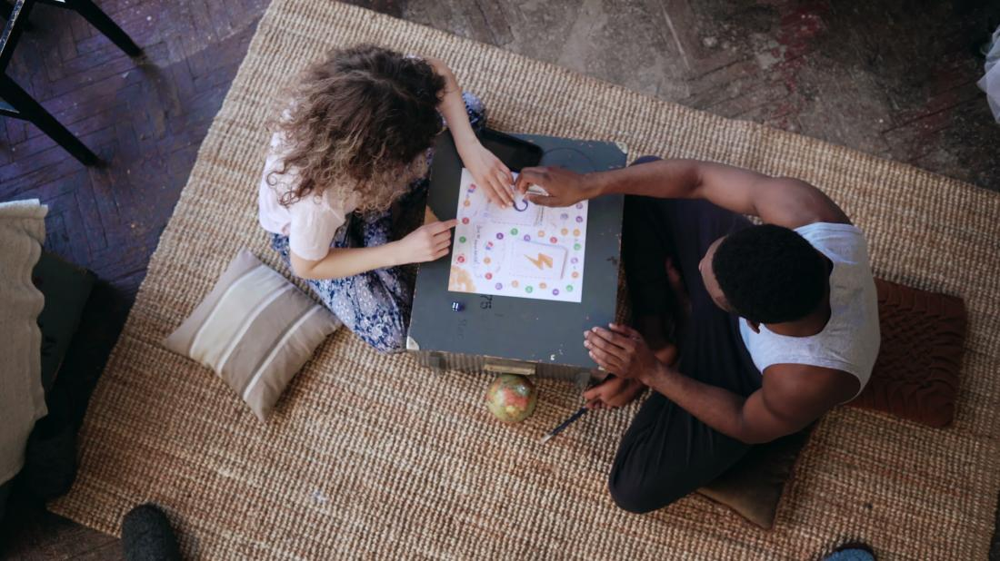
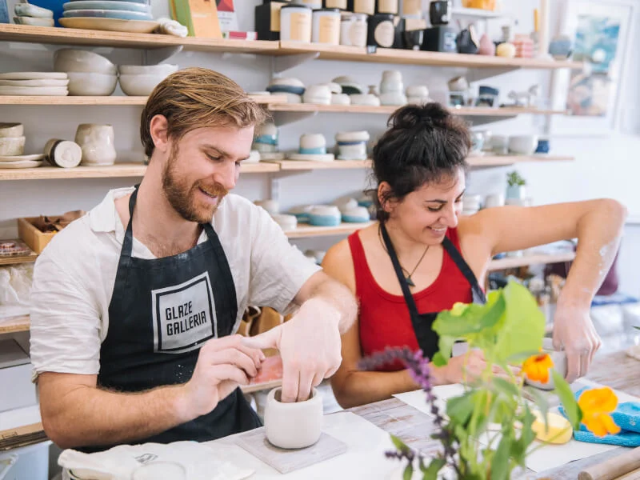
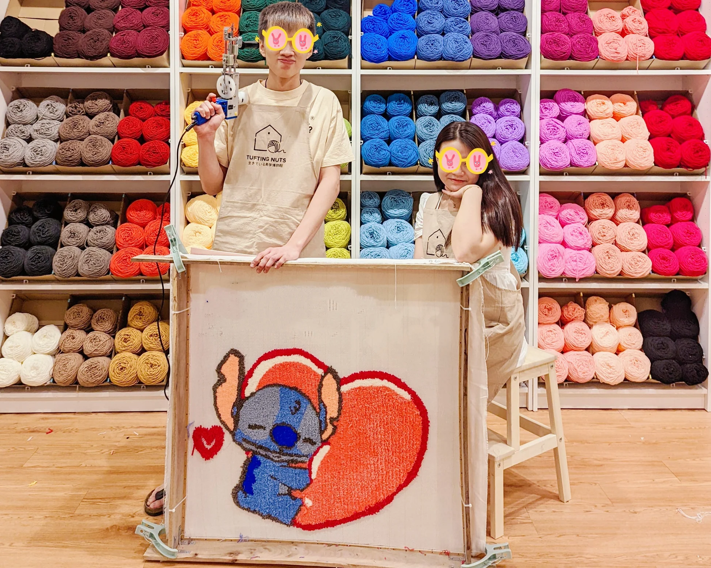
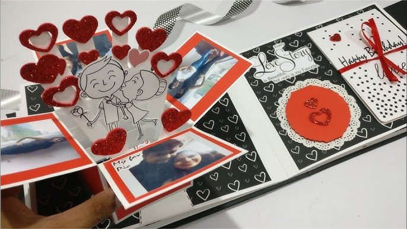

Please complete the survey found on the home page for us to recommend date ideas to you!
Bowling
Head to your local bowling alley for a fun and active date.
Bowling is a classic activity that allows you to engage in friendly competition while enjoying each other's company.
Whether you're both experienced bowlers or trying it out for the first time, it's sure to be a memorable experience.
Keep in mind to bring socks! Here are a list of bowling alleys that we highly recommend you check out!
Kallang Leisure Park Bowl:
5 Stadium Walk, #02-22, 397693
Orchid Bowl:
($2.40/game per person) Orchid Country Club #02-37
Hiking

Embark on a refreshing hike together, immersing yourselves in nature's beauty and enjoying the peaceful surroundings. Choose a trail that matches your fitness level and offers scenic views or interesting terrain. Don't forget to pack essentials like water, snacks, and comfortable footwear for a memorable outdoor adventure.
Mini-Golf
Challenge each other to a round of mini golf at a local course. It's a fun and light-hearted way to spend time together,
filled with laughter and friendly competition. Enjoy the quirky obstacles and celebrate each hole-in-one or amusing near-miss
as you navigate the course together. Check out these places:
Ultra Golf: (tickets starts from $22.00)
54 Palawan Beach Walk, Singapore 098233
Kulnari Mystery Golf: (tickets: $182.16)
1B Circular Rd, Singapore 049406
Board Games
Set up a cosy game night at home with your favourite board games. Whether you prefer classics like Monopoly or modern favourites like Catan, board games offer a chance to bond over strategy, luck, and playful banter. Prepare some snacks and beverages to make it a complete and enjoyable evening.
Video Games
Spend an exciting evening at home immersed in the world of video games. Choose a game that you both enjoy or try something new together. Prepare some snacks, get comfortable, and share a night of friendly competition or cooperative gameplay. It's a fun way to bond and enjoy each other's company through laughter or friendly fire, making for a memorable night in!
Movie
Curl up together for a movie night at home or at a cosy cinema. Choose a film genre you both enjoy or explore something new. Prepare popcorn, snacks, and maybe even a comfy blanket for a relaxing and entertaining evening. You two can even discuss your favourite scenes or analyse the plot together afterward to deepen your shared experience!
Home-Cooked Meal
Your partner will surely appreciate a comforting, hearty home-cooked meal that you put time and effort into preparing. Just be sure to plan your time well and have all your ingredients ready in advance!
Picnic
Enjoy a delightful picnic in a beautiful park. Pack a picnic basket with your favourite snacks, a cosy blanket, and some refreshing drinks. Find a scenic spot under a tree or under the stars, and relish the peaceful surroundings and each other's company. It's a wonderful way to spend time together, basking in the warmth of the sun or the breeze of the night and the simplicity of a lovely outdoor meal! Picnic spots we recommend include Southern Islands, Esplanade Roof Terrace, Kallang Riverside Park and Marina Barrage.
ArtScience Museum
Located at the heart of the city, enjoy exploring the ArtScience Museum and its fascinating exhibitions whilst enjoying its stunning architecture.
With their wide range of display, you and your partner would surely have much to gaze upon.
Discuss your favourite artworks and exhibits as you stroll hand in hand through this cultural gem. Tickets start at $33.50
Check out the ArtScience Mueseum Here!
Pottery Making
Pottery making is an ideal activity for a fun weekend date or a creative new hobby to explore with your partner, while being able to craft
unique ceramic pieces to take home and create lasting memories and keepsakes. While it's a relaxing and enjoyable experience, be prepared
for a bit of a challenge as you mold and shape the clay! Here are some pottery classes that we recommend:
Am I Addicted: trial classes start at $55/person,
#05-37, Orchard Central, 181 Orchard Road, Singapore 238896
Boon's Pottery: classes start at $80/person,
#B1-01/02, 91 Tanglin Place, Tanglin Road, Singapore 247918
Tufting
This trendy activity is ideal for a fun weekend date or as a creative new hobby for you and your partner to enjoy together.
By the end of the session, you'll have a beautiful rug to take home, a lasting memento of your shared experience. Be ready for a bit of an arm workout,
though, it's more challenging than it appears! Here are a list of tufting studios that we recommend:
WeTuft:
#02-26, Orchard Cineleisure, 8 Grange Road, Singapore 239695
Hueplay Studio:
#04-07, Orchard Central, 181 Orchard Road, Singapore 238896
Perfume Making
Explore the art of perfume making together for a unique and personalized experience.
Many cities offer workshops where you can learn about different scents, blend them, and create your own custom fragrance.
It's a sensory journey that allows you to express creativity and craft a scent that reflects your personalities and memories.
Scentopia:
36 Siloso Bch Walk, Unit 01-04 Sentosa, 099007 (tickets at $105.25/person)
Late-Night Walk In a Park
Take a scenic late-night walk in the park, soaking in the tranquillity and charm of the evening. Stroll along a quiet path, hand in hand, and enjoy the gentle night breeze and the twinkling stars above. It's a romantic way to connect and share moments of intimacy, creating lasting memories under the moonlit sky.
Love Book
Create a sentimental and heartfelt "love-book" filled with reasons why you cherish each other. Gather materials such as colorful paper, markers, stickers, and photos to craft a personalized book. Each page can highlight a different reason, memory, or trait that makes your partner special to you. It's a thoughtful and meaningful gesture that celebrates your relationship and creates a keepsake you both can treasure.